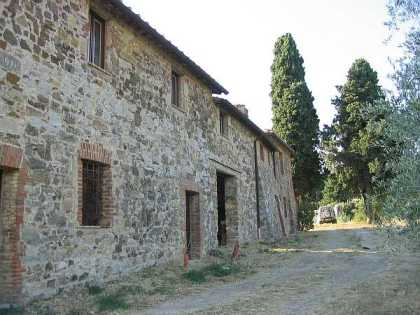
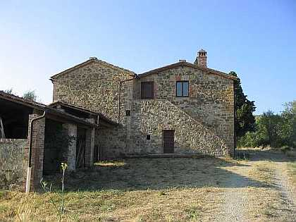
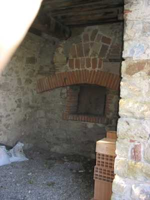
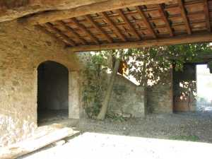
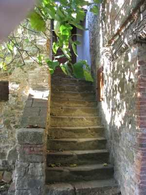

BELVEDERINO

Dati certi ci fanno affermare che Belvederino sia nato intorno al 1650 quando la famiglia Squarci, sua proprietaria, acquista una metà di Belvedere e destina parte delle terre, incolte o rubate al bosco al di là del borro, al nuovo podere, chiamato Belvederino forse per la sua modesta struttura, dove vi insedia un mezzadro. Una difficoltosa strada diretta in discesa e salita collegava Belvedere al nuovo podere, mentre una seconda a largo raggio portava alla strada di Petroio, collegandosi a quella di Belvedere. Certamente è stato edificato alcuni anni prima del 1653 quando appare tra i poderi che pagano la decima con ¾ di staio di grano e ¼ di vino, aumentati entrambi a uno, per la nuova parrocchia di Quercegrossa. Nato povero resterà sempre un podere di misere risorse come si evince dai più tardi commenti ottocenteschi:
"Lavora piccolo e sterile podere", oppure:
"Podere magrissimo e famiglia miserabile".

Foto a destra: ingresso al secondo podere
Dal 1841, dopo probabili lavori di ampliamento, comprende anche una pigione dove abita certo Sestigiani; un ridotto ambiente che non ospiterà mai più di 4 persone. Ad altra successiva aggiunta al fabbricato, ai primi del ‘900, facilmente riconoscibile, si deve la nuova distribuzione delle terre e da allora si deve considerare Belvederino come due poderi, I e II, nei quali persisteranno le difficili condizioni economiche delle due famiglie lavoranti; ancora ai tempi di Giovacchino Lorenzini, a metà Novecento, il suo podere era spezzettato: un pezzo guardava la Torre, uno Belvedere e uno le Racole, frutto di una arrangiata divisione. Infatti, i due poderi, pur avendo un’estensione di circa dieci ettari ciascuno, comprendevano larghi appezzamenti di incolti e boschivi. L’intero fabbricato di Belvederino si presenta snello nella sua forma allungata, su due piani con chiostro e due scale di ingresso ai piani superiori. Un secolo si mantenne la proprietà Squarci poi, come Belvedere, passò in mano ai Cumini padroni per oltre un secolo, fino al 1885 quando passò all’ingegner Pezzuoli e successivamente, il 13 marzo 1910, passa a Martini contessa Francesca, fu Conte Enrico, in Radicati, restando poi proprietà della fattoria delle Lodoline. Come abbiamo visto la prima famiglia ad abitare Belvederino dovrebbero essere stati i Corti seguiti dai Letici nel 1672, poi compare per un decennio Gostanza vedova Bandini, e questa famiglia è presente a Belvederino per tutta la prima metà del Settecento. Poi i Bruni, i Malandrini, i Morandini, i Vanni e i Vannini per ricordare quelle che vi hanno dimorato per alcuni anni. Nel 1901 vi abitano il pigionale Pietro Giannini e il mezzadro Dionisio Giglioli al quale subentrano Tommaso Baragatti e in un secondo tempo Niccolò Sancasciani. Infine dagli anni Trenta troviamo le due famiglie, conosciute per avervi dimorato a lungo, dei Lorenzini e dei Fosi. Gli Angiolini da Orgia subentrano nel 1947 ai partenti Lorenzini, poi i Massai e forse i Micheli che saranno l’ultima famiglia ad abitarvi, mentre i Fosi partono verso il 1960.



Alcune cartoline di Belvederino: il forno, la parata, le scale del podere Fosi e una veduta da nord